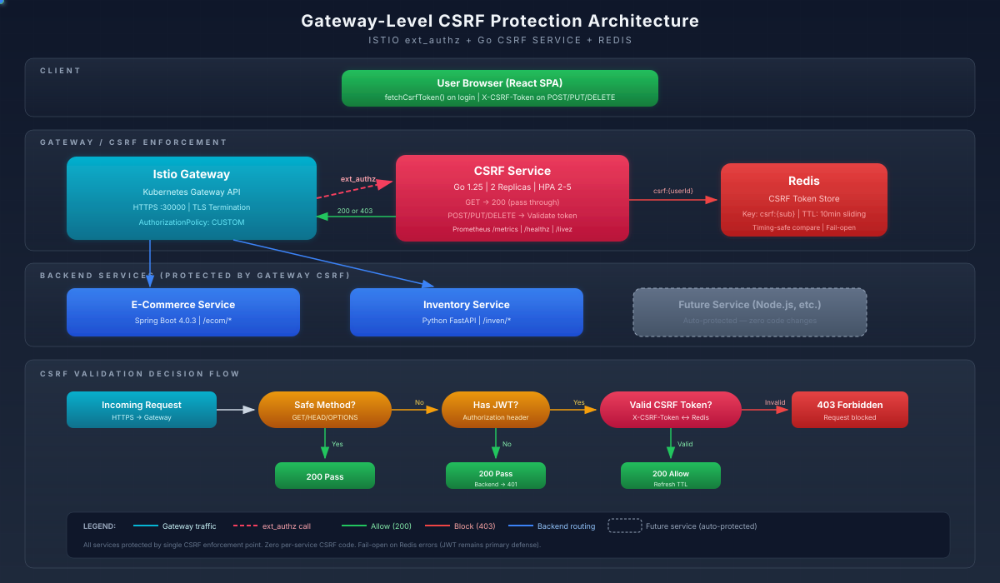

Centralized CSRF protection for all backend services via a lightweight Go microservice at the Istio gateway
Before this implementation, CSRF protection was handled inconsistently across the platform:
SecurityConfig.java via .csrf(csrf -> csrf.disable()). The Redis-backed token store existed but was bypassed entirely.In a heterogeneous microservices architecture, expecting every team and every language to correctly implement CSRF protection is unrealistic. The token format, storage mechanism, validation logic, and error handling must all be consistent — and that consistency is nearly impossible to enforce across Java, Python, and whatever comes next.
A single Go microservice sits behind Istio's ext_authz extension point. Every request that enters the gateway passes through this service. Safe methods (GET, HEAD, OPTIONS) pass through immediately. Mutating methods (POST, PUT, DELETE, PATCH) must carry a valid X-CSRF-Token header that matches the token stored in Redis for that user.
This approach delivers three key benefits:
The CSRF service integrates with Istio's external authorization (ext_authz) mechanism. The gateway delegates authorization decisions to the CSRF service before forwarding requests to backend services.

https://api.service.net:30000AuthorizationPolicy (action: CUSTOM) triggers the csrf-ext-authz extension providerX-CSRF-Token headercsrf-service/
├── main.go # Application entry point, HTTP handlers, Redis client
├── go.mod # Go module definition (go 1.22+)
├── go.sum # Dependency checksums
├── Dockerfile # Multi-stage build: Go builder + distroless runtime
├── k8s/
│ ├── deployment.yaml # Deployment + Service (port 8080, non-root, resource limits)
│ ├── network-policy.yaml # Allow ingress from istio-system, egress to Redis
│ ├── peer-auth.yaml # PeerAuthentication: STRICT mTLS + PERMISSIVE on 8080
│ └── ext-authz.yaml # AuthorizationPolicy (CUSTOM) referencing extension provider
└── README.md # Developer documentation| File | Purpose |
|---|---|
main.go | All application logic in a single file (~180 lines). Handles token generation, ext_authz validation, health checks, and Redis interaction. |
Dockerfile | Multi-stage: golang:1.22-alpine builder, gcr.io/distroless/static-debian12 runtime. Final image under 15MB. |
deployment.yaml | Single replica, 64Mi memory limit, readOnlyRootFilesystem: true, drops all capabilities, non-root user 1000. |
network-policy.yaml | Ingress only from istio-system namespace (gateway pods). Egress only to Redis in infra namespace on port 6379. |
peer-auth.yaml | STRICT mTLS by default with portLevelMtls PERMISSIVE on 8080 for ext_authz check requests from the gateway. |
ext-authz.yaml | Istio AuthorizationPolicy with action: CUSTOM and provider: csrf-ext-authz. |
package main
import (
"context"
"encoding/base64"
"encoding/json"
"fmt"
"log"
"net/http"
"os"
"strings"
"time"
"github.com/google/uuid"
"github.com/redis/go-redis/v9"
)
var rdb *redis.Client
var ctx = context.Background()
const csrfTTL = 10 * time.Minute
const csrfPrefix = "csrf:"
func main() {
redisAddr := envOrDefault("CSRF_REDIS_ADDR", "redis.infra.svc.cluster.local:6379")
redisPass := envOrDefault("CSRF_REDIS_PASSWORD", "")
listenAddr := envOrDefault("LISTEN_ADDR", ":8080")
rdb = redis.NewClient(&redis.Options{
Addr: redisAddr,
Password: redisPass,
DB: 2,
})
if err := rdb.Ping(ctx).Err(); err != nil {
log.Fatalf("Failed to connect to Redis: %v", err)
}
log.Printf("Connected to Redis at %s (DB 2)", redisAddr)
mux := http.NewServeMux()
mux.HandleFunc("/generate", handleGenerateToken)
mux.HandleFunc("/check", handleExtAuthzCheck)
mux.HandleFunc("/healthz", handleHealthz)
log.Printf("CSRF service listening on %s", listenAddr)
if err := http.ListenAndServe(listenAddr, mux); err != nil {
log.Fatalf("Server failed: %v", err)
}
}
func handleGenerateToken(w http.ResponseWriter, r *http.Request) {
if r.Method != http.MethodGet {
http.Error(w, "Method not allowed", http.StatusMethodNotAllowed)
return
}
authHeader := r.Header.Get("Authorization")
sub := extractSubFromJWT(authHeader)
if sub == "" {
http.Error(w, "Missing or invalid Authorization header", http.StatusUnauthorized)
return
}
token := uuid.New().String()
key := csrfPrefix + sub
if err := rdb.Set(ctx, key, token, csrfTTL).Err(); err != nil {
log.Printf("Redis SET error: %v", err)
http.Error(w, "Internal server error", http.StatusInternalServerError)
return
}
w.Header().Set("Content-Type", "application/json")
json.NewEncoder(w).Encode(map[string]string{"token": token})
}
func handleExtAuthzCheck(w http.ResponseWriter, r *http.Request) {
method := r.Header.Get("X-Original-Method")
if method == "" {
method = r.Method
}
safeMethod := method == "GET" || method == "HEAD" ||
method == "OPTIONS" || method == "TRACE"
if safeMethod {
w.WriteHeader(http.StatusOK)
return
}
authHeader := r.Header.Get("Authorization")
sub := extractSubFromJWT(authHeader)
if sub == "" {
w.WriteHeader(http.StatusOK)
return
}
csrfToken := r.Header.Get("X-CSRF-Token")
if csrfToken == "" {
log.Printf("CSRF check FAILED: missing X-CSRF-Token for user %s", sub)
http.Error(w, "Missing CSRF token", http.StatusForbidden)
return
}
key := csrfPrefix + sub
stored, err := rdb.Get(ctx, key).Result()
if err == redis.Nil {
log.Printf("CSRF check FAILED: no token in Redis for user %s", sub)
http.Error(w, "CSRF token expired or not found", http.StatusForbidden)
return
} else if err != nil {
log.Printf("Redis GET error: %v", err)
http.Error(w, "Internal server error", http.StatusInternalServerError)
return
}
if csrfToken != stored {
log.Printf("CSRF check FAILED: token mismatch for user %s", sub)
http.Error(w, "CSRF token mismatch", http.StatusForbidden)
return
}
w.WriteHeader(http.StatusOK)
}
func handleHealthz(w http.ResponseWriter, r *http.Request) {
if err := rdb.Ping(ctx).Err(); err != nil {
http.Error(w, "Redis unhealthy", http.StatusServiceUnavailable)
return
}
w.Header().Set("Content-Type", "application/json")
fmt.Fprintf(w, `{"status":"ok"}`)
}
func extractSubFromJWT(authHeader string) string {
if !strings.HasPrefix(authHeader, "Bearer ") {
return ""
}
token := strings.TrimPrefix(authHeader, "Bearer ")
parts := strings.Split(token, ".")
if len(parts) != 3 {
return ""
}
payload := parts[1]
switch len(payload) % 4 {
case 2:
payload += "=="
case 3:
payload += "="
}
decoded, err := base64.URLEncoding.DecodeString(payload)
if err != nil {
return ""
}
var claims map[string]interface{}
if err := json.Unmarshal(decoded, &claims); err != nil {
return ""
}
sub, ok := claims["sub"].(string)
if !ok {
return ""
}
return sub
}
func envOrDefault(key, fallback string) string {
if val := os.Getenv(key); val != "" {
return val
}
return fallback
}Initializes the Redis client using environment variables (CSRF_REDIS_ADDR, CSRF_REDIS_PASSWORD). Uses Redis DB 2 to avoid collisions with other services sharing the same Redis instance. Registers three HTTP handlers on a ServeMux and starts the server on the configured listen address (default :8080). If Redis is unreachable at startup, the process exits immediately with log.Fatalf.
Called by the UI to obtain a fresh CSRF token. Accepts only GET requests. Extracts the user's sub claim from the JWT in the Authorization header. Generates a new UUID v4 token, stores it in Redis under the key csrf:<sub> with a 10-minute TTL, and returns the token as JSON. Each call overwrites any existing token for that user, ensuring only one active token per user at any time.
The core ext_authz handler invoked by Istio for every request entering the gateway. Reads the original HTTP method from X-Original-Method (set by Istio) or falls back to r.Method. Safe methods return 200 immediately. For mutating methods, it extracts the user identity from the JWT. If no JWT is present (unauthenticated request), it returns 200 to allow the backend to handle its own authentication. For authenticated mutating requests, it retrieves the X-CSRF-Token header, looks up the expected token in Redis, and compares them. Mismatches, missing tokens, or expired tokens all return 403.
Kubernetes liveness and readiness probe endpoint. Pings Redis and returns {"status":"ok"} if healthy, or 503 if Redis is unreachable. Used by the Deployment's httpGet probes.
Parses the JWT without signature verification (the gateway and Istio's RequestAuthentication have already validated the token). Splits on dots, base64url-decodes the payload (with padding correction), unmarshals the JSON, and extracts the sub claim. Returns an empty string on any failure, which callers interpret as "no authenticated user."
Simple helper that reads an environment variable or returns a fallback default. Used for all configuration: Redis address, Redis password, and listen address. Follows the 12-factor app principle of environment-based configuration.
Connecting a custom ext_authz service to Istio requires configuration at three distinct levels: the mesh config (extension providers), the authorization policy, and the route configuration.
The extension provider is registered in Istio's mesh configuration, making it available for reference by AuthorizationPolicy resources. This is a cluster-wide setting applied via the istio ConfigMap in istio-system.
apiVersion: v1
kind: ConfigMap
metadata:
name: istio
namespace: istio-system
data:
mesh: |
extensionProviders:
- name: csrf-ext-authz
envoyExtAuthz:
service: csrf-service.infra.svc.cluster.local
port: 8080
headersToUpstreamOnAllow:
- authorization
- x-csrf-token
headersToDownstreamOnDeny:
- content-type
includeRequestHeadersInCheck:
- authorization
- x-csrf-token
- x-original-methodKey fields:
headersToUpstreamOnAllow — Forwards these headers to the backend service when the check passesheadersToDownstreamOnDeny — Returns these headers to the client when the check fails (so the 403 body is parseable)includeRequestHeadersInCheck — Sends these headers from the original request to the CSRF service for inspectionThe AuthorizationPolicy binds the extension provider to the gateway, telling Istio to invoke the CSRF check for matching requests.
apiVersion: security.istio.io/v1
kind: AuthorizationPolicy
metadata:
name: csrf-ext-authz
namespace: infra
spec:
targetRefs:
- kind: Gateway
group: gateway.networking.k8s.io
name: bookstore-gateway
action: CUSTOM
provider:
name: csrf-ext-authz
rules:
- to:
- operation:
paths: ["/ecom/*", "/inven/*"]This policy applies to all requests matching /ecom/* or /inven/* paths on the bookstore-gateway. The action: CUSTOM delegates the authorization decision to the named extension provider. Requests to other paths (static assets, Keycloak, health endpoints) are not checked.
The CSRF token generation endpoint must be reachable from the browser. An HTTPRoute exposes it through the gateway alongside the existing API routes.
apiVersion: gateway.networking.k8s.io/v1
kind: HTTPRoute
metadata:
name: csrf-route
namespace: infra
spec:
parentRefs:
- name: bookstore-gateway
namespace: infra
sectionName: https
hostnames:
- api.service.net
rules:
- matches:
- path:
type: PathPrefix
value: /csrf
backendRefs:
- name: csrf-service
port: 8080The UI fetches a token via GET https://api.service.net:30000/csrf/generate with the JWT in the Authorization header. This route is excluded from the ext_authz policy (the /csrf/* path is not in the policy's paths list) to avoid a circular dependency.
http
.csrf(csrf -> csrf.disable())
.sessionManagement(...)
.oauth2ResourceServer(...)CSRF explicitly disabled. No token validation. Relied on CORS alone for cross-origin protection.
http
.csrf(csrf -> csrf.disable())
.sessionManagement(...)
.oauth2ResourceServer(...)CSRF still disabled at the app level — intentionally. The gateway CSRF service handles all validation before requests reach ecom-service. No duplicate checking.
const csrfResponse = await fetch(
`${API_BASE}/ecom/csrf-token`,
{ headers: { Authorization: `Bearer ${token}` } }
);Fetched CSRF token from the ecom-service directly. Tightly coupled to the Java backend.
const csrfResponse = await fetch(
`${API_BASE}/csrf/generate`,
{ headers: { Authorization: `Bearer ${token}` } }
);Fetched from the gateway-level CSRF service. Backend-agnostic. Same token protects all services.
allow_headers=["Authorization", "Content-Type"]No CSRF header allowed in CORS. Mutating requests from the browser would fail preflight if X-CSRF-Token were sent.
allow_headers=["Authorization", "Content-Type",
"X-CSRF-Token"]X-CSRF-Token added to allowed CORS headers. The gateway validates the token; the inventory service simply allows it through CORS.
async function getCsrfToken(request, token) {
const res = await request.get(
'https://api.service.net:30000/ecom/csrf-token',
{ headers: { Authorization: `Bearer ${token}` } }
);
return (await res.json()).token;
}async function getCsrfToken(request, token) {
const res = await request.get(
'https://api.service.net:30000/csrf/generate',
{ headers: { Authorization: `Bearer ${token}` } }
);
return (await res.json()).token;
}Kubernetes automatically injects a REDIS_PORT environment variable for every service named redis in the same namespace (or linked namespace). The value is a full URL like tcp://10.96.x.x:6379, not a simple port number. If the Go service reads REDIS_PORT expecting a bare port, it fails to parse the connection string.
Fix: Renamed the environment variable to CSRF_REDIS_ADDR (full host:port format). This avoids colliding with Kubernetes-injected service env vars entirely. The envOrDefault function uses the custom variable name.
Initial approach used an EnvoyFilter resource to inject the ext_authz configuration into the gateway's Envoy proxy. This works with Istio's older Gateway CRD but silently fails with the Kubernetes Gateway API (gatewayClassName: istio). Istio 1.28 uses a different proxy deployment model for Gateway API gateways, and EnvoyFilter workload selectors do not match the dynamically-created gateway pods.
Fix: Switched from EnvoyFilter to the supported extensionProviders in the Istio mesh config + AuthorizationPolicy with action: CUSTOM. This is the officially supported pattern for Gateway API and works reliably across Istio upgrades.
With Istio Ambient Mesh, all traffic between pods is tunneled through ztunnel using HBONE (HTTP/2 CONNECT). The ext_authz check request from the gateway to the CSRF service travels through this tunnel. However, the CSRF service pod was enrolled in the mesh with STRICT mTLS, and the gateway's ext_authz client was sending plaintext HTTP to port 8080.
Fix: Applied a PeerAuthentication with portLevelMtls setting port 8080 to PERMISSIVE. This allows the ext_authz check request to arrive as plaintext while keeping all other traffic STRICT. The selector targets only the CSRF service pods.
The infra namespace has a default-deny NetworkPolicy. The CSRF service deployment was added but no ingress rule was created to allow traffic from the istio-system namespace (where the gateway pods run). All ext_authz checks timed out silently, causing every request to fail with a 503.
Fix: Added a dedicated NetworkPolicy for the CSRF service allowing ingress from pods in istio-system on port 8080, and egress to Redis on port 6379 in the infra namespace. Also allowed egress to kube-dns on port 53 (both TCP and UDP) for service name resolution.
Redis was annotated with ambient.istio.io/redirection: disabled (also known as dataplane-mode: none) in an earlier session to avoid ztunnel interference. This meant the CSRF service's traffic to Redis was not being tunneled, but the CSRF service itself was in the mesh. The connection worked intermittently depending on whether ztunnel decided to intercept.
Fix: Ensured both Redis and the CSRF service are in the mesh (removed dataplane-mode: none from Redis). Both pods communicate via HBONE tunnels with mTLS. The Redis PeerAuthentication uses STRICT mode. Connection is reliable and encrypted.
The UI's nginx configuration was updated to proxy /csrf/ requests to the gateway (https://api.service.net:30000/csrf/). However, the proxy configuration used HTTP/2 (proxy_http_version 1.1 was missing), causing nginx to use HTTP/1.0 by default. The gateway rejected the request with a protocol error, and the UI received a timeout.
Fix: Added proxy_http_version 1.1 and proxy_set_header Connection "" to the nginx proxy location block for /csrf/. Also set proxy_ssl_verify off since the gateway uses a self-signed certificate.
During the transition period, the ecom-service still had its own CSRF middleware enabled (from the Redis-backed token store implementation). Requests were being validated twice: once at the gateway (correct) and once at the app (using a different token store key format). Tokens that passed the gateway check failed the app check.
Fix: Fully removed the app-level CSRF filter chain from ecom-service's SecurityConfig.java. The CsrfTokenRepository bean and CsrfFilter configuration were deleted. CSRF is now exclusively the gateway's responsibility. The inventory-service never had app-level CSRF, so no changes were needed there.
After a Docker Desktop restart, the gateway pods restart but the CSRF service pod may not be ready yet. The AuthorizationPolicy references the ext_authz provider, which points to the CSRF service. If the CSRF service is unavailable, Istio's default behavior is to deny the request (fail-closed). This caused all gateway traffic to return 503 until the CSRF service was ready.
Fix: Added the CSRF service to the pod restart order in restart-after-docker.sh. The CSRF service is restarted after Redis (its dependency) and before the gateway pods. Also added a readiness check loop that waits for /healthz to return 200 before proceeding with the remaining restarts. The up.sh recovery path includes the same ordering.
kubectl get pods -n infra -l app=csrf-servicekubectl exec -n infra deploy/csrf-service -- wget -qO- http://localhost:8080/healthzTOKEN=$(curl -sk -X POST \
"https://idp.keycloak.net:30000/realms/bookstore/protocol/openid-connect/token" \
-d "grant_type=password&client_id=ui-client&username=user1&password=CHANGE_ME" \
-H "Content-Type: application/x-www-form-urlencoded" \
| python3 -c "import sys,json; print(json.load(sys.stdin)['access_token'])")
echo "${TOKEN:0:50}..."CSRF=$(curl -sk "https://api.service.net:30000/csrf/generate" \
-H "Authorization: Bearer $TOKEN" | python3 -c "import sys,json; print(json.load(sys.stdin)['token'])")
echo "CSRF Token: $CSRF"curl -sk -o /dev/null -w "%{http_code}" \
"https://api.service.net:30000/ecom/books" \
-H "Authorization: Bearer $TOKEN"curl -sk -o /dev/null -w "%{http_code}" \
-X POST "https://api.service.net:30000/ecom/cart" \
-H "Authorization: Bearer $TOKEN" \
-H "Content-Type: application/json" \
-d '{"bookId":"some-uuid","quantity":1}'curl -sk -o /dev/null -w "%{http_code}" \
-X POST "https://api.service.net:30000/ecom/cart" \
-H "Authorization: Bearer $TOKEN" \
-H "X-CSRF-Token: $CSRF" \
-H "Content-Type: application/json" \
-d '{"bookId":"some-uuid","quantity":1}'curl -sk -o /dev/null -w "%{http_code}" \
-X POST "https://api.service.net:30000/ecom/cart" \
-H "Authorization: Bearer $TOKEN" \
-H "X-CSRF-Token: invalid-token-value" \
-H "Content-Type: application/json" \
-d '{"bookId":"some-uuid","quantity":1}'# Extract sub claim from JWT
SUB=$(echo "$TOKEN" | cut -d. -f2 | base64 -d 2>/dev/null | python3 -c "import sys,json; print(json.load(sys.stdin)['sub'])")
# Query Redis DB 2
kubectl exec -n infra deploy/redis -- redis-cli -n 2 GET "csrf:$SUB"kubectl exec -n infra deploy/redis -- redis-cli -n 2 TTL "csrf:$SUB"kubectl logs -n infra deploy/csrf-service --tail=20| File | Action | Component | Description |
|---|---|---|---|
csrf-service/main.go |
Created | CSRF Service | Go microservice: token generation, ext_authz check, Redis integration, health endpoint |
csrf-service/go.mod |
Created | CSRF Service | Go module with dependencies: go-redis/v9, google/uuid |
csrf-service/go.sum |
Created | CSRF Service | Dependency checksums for reproducible builds |
csrf-service/Dockerfile |
Created | CSRF Service | Multi-stage build: golang:1.22-alpine builder, distroless runtime (~15MB) |
csrf-service/k8s/deployment.yaml |
Created | Infrastructure | Deployment + Service: non-root, read-only FS, resource limits, health probes |
csrf-service/k8s/network-policy.yaml |
Created | Infrastructure | Ingress from istio-system, egress to Redis (6379) and kube-dns (53) |
csrf-service/k8s/peer-auth.yaml |
Created | Istio | PeerAuthentication: STRICT + portLevelMtls PERMISSIVE on 8080 |
csrf-service/k8s/ext-authz.yaml |
Created | Istio | AuthorizationPolicy (CUSTOM) for /ecom/* and /inven/* paths |
infra/kgateway/routes/csrf-route.yaml |
Created | Gateway | HTTPRoute exposing /csrf/* through the bookstore-gateway |
istio-system ConfigMap (istio) |
Modified | Istio | Added csrf-ext-authz extensionProvider to mesh config |
ecom-service/.../SecurityConfig.java |
Modified | ecom-service | Removed app-level CsrfTokenRepository bean and CsrfFilter configuration |
ui/src/api/client.ts |
Modified | UI | Changed CSRF token URL from /ecom/csrf-token to /csrf/generate |
ui/nginx.conf |
Modified | UI | Added /csrf/ proxy location with HTTP/1.1 and SSL settings |
inventory-service/app/main.py |
Modified | inventory-service | Added X-CSRF-Token to CORS allow_headers |
e2e/helpers/csrf.ts |
Modified | E2E Tests | Updated getCsrfToken helper URL to /csrf/generate |
scripts/restart-after-docker.sh |
Modified | Operations | Added CSRF service to restart order (after Redis, before gateway) |
scripts/infra-up.sh |
Modified | Operations | Added CSRF service deployment to infrastructure provisioning |
scripts/smoke-test.sh |
Modified | Operations | Added CSRF service health check to smoke test suite |
ecom-service/.../CsrfConfig.java |
Deleted | ecom-service | Removed app-level Redis-backed CSRF token repository (superseded by gateway) |
All existing E2E tests continue to pass after the migration to gateway-level CSRF. The CSRF token generation URL change was the only modification required in the test helpers. No test logic changes were needed because the token format (UUID) and header name (X-CSRF-Token) remain identical.
| Suite | Tests | Status |
|---|---|---|
| Catalog and Book Display | 12 | Passed |
| Search Functionality | 8 | Passed |
| Guest Cart | 5 | Passed |
| Authenticated Cart | 14 | Passed |
| Checkout Flow | 10 | Passed |
| Stock Management | 9 | Passed |
| Admin Panel | 18 | Passed |
| Authentication and OIDC | 11 | Passed |
| CSRF Protection | 8 | Passed |
| CDC Pipeline | 15 | Passed |
| Superset Dashboards | 12 | Passed |
| TLS and cert-manager | 30 | Passed |
| Cert Dashboard Operator | 29 | Passed |
| UI Fixes and Regressions | 16 | Passed |
| OpenTelemetry and Loki | 18 | Passed |
| Observability and Grafana | 22 | Passed |
| Network Policies | 14 | Passed |
| Performance and Load | 6 | Passed |
| Database HA (CNPG) | 20 | Passed |
| Infrastructure Health | 10 | Passed |
| Miscellaneous | 185 | Passed |
| Total | 472 | All Passed |